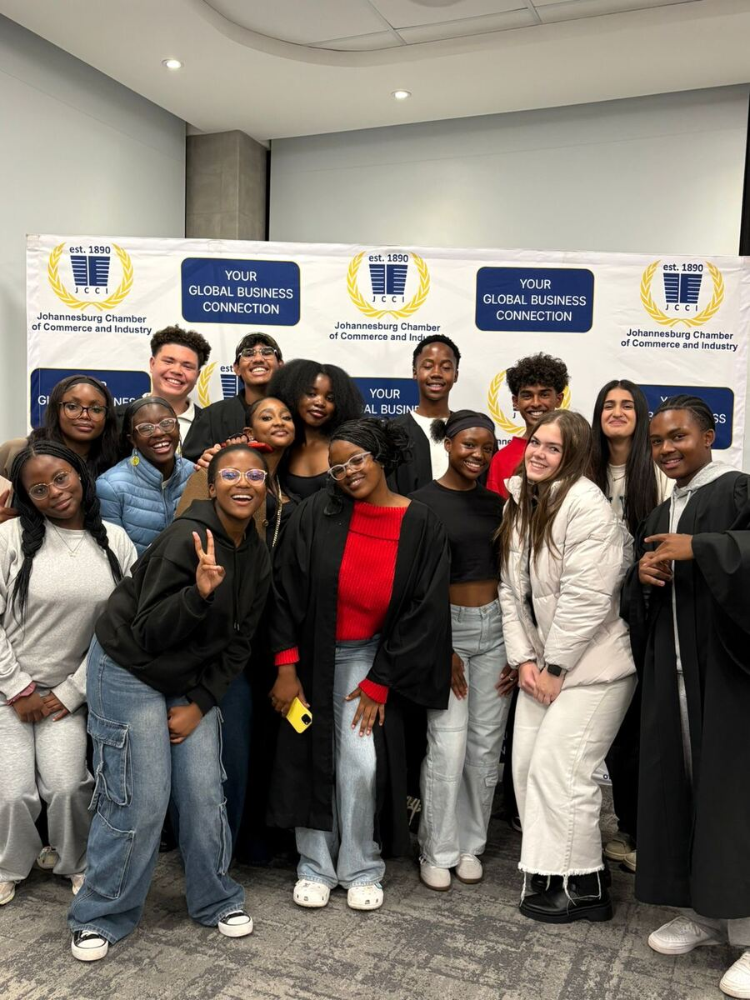
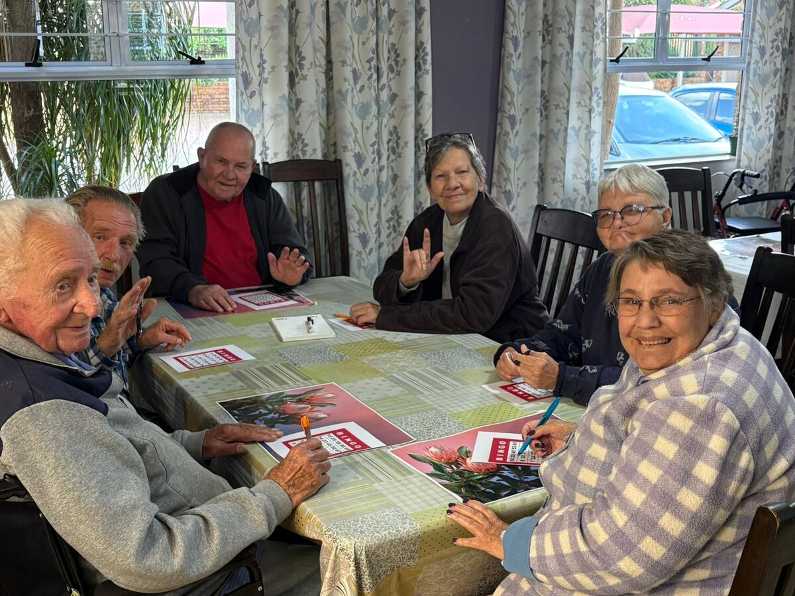

The story
One hundred years of Joburg's youth leadership.
Where the council comes from, what it is for, and how it runs.
Background
Nominated by their schools.
The Johannesburg Junior Council is presently made up of 80 Junior Councillors in Grade 11, nominated by 40 secondary schools in the Greater Johannesburg Metropolitan area. The Council was established in 1926.
It brings together learners from different schools and backgrounds who would not otherwise work together, and gives them real projects to run across the city.

Objectives
What the council is for.
Build capacity for better leadership in line with the country's Constitution.
Promote contact and cooperation between school leaders in all communities.
Develop an interest in civic and community affairs.
Build awareness of those less privileged and of problems in the community, and run projects that help ease them.
Develop self-confidence and a positive self-image among councillors and young people generally.
Activities
What a council year looks like.
Councillors, and young people beyond the council, provide community services to the under-privileged, senior citizens and the indigent, and work with twilight and street children on building self-esteem.
Functions organised by the councillors deliver food parcels, blankets and other essentials directly to people who need them. The council also hosts leadership lectures by prominent personalities, and talks by entrepreneurs, financial advisors and motivational speakers on life skills.
Visits and tours through the year help councillors learn more about the country, its history and its people.

The record
A century, in moments.
1926
Founded in Johannesburg
The Junior Council is established to develop the leadership potential of the city's school youth.
Before 1994
Open to every learner
As the country moved towards democracy, the council asked participating schools to nominate learners with the qualities of a Junior Councillor irrespective of race, despite the legal restrictions of the time, and planned every activity, outing and event so that all councillors could take part together.
2026
Centenary year
One hundred years of youth leadership in Johannesburg, celebrated on 22 and 26 September.
You are here
How it runs
Councillors elect their own leaders.
Chosen by the council
After about three months of working together, the councillors elect their own leadership: two Co-Mayors (female and male), a Chairman of Management, a Chief Whip and the chairpersons of the five committees.
Parents and members of the public
The council is assisted by a Governing Body made up of parents of past and present councillors and interested members of the public. It is governed by a constitution and registered with the Department of Social Development as a non-profit organisation.
Governing Body
Who to speak to.
AGChair
Avrille Gork
Chairperson
ARCEO
Avril Rebeck
Chief Executive Officer
Read on
Where the work happens.
See the five committees, the schools they come from, and the centenary programme.